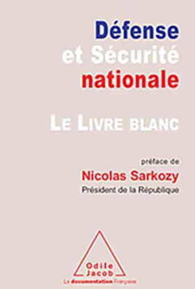
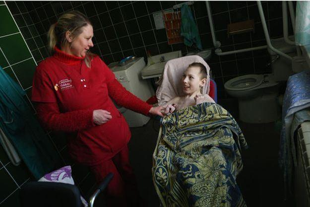

« Il est extrêmement rare que la montagne soit abrupte de tous côtés »
André Gide
La notion de résilience est promue depuis le début de ce siècle par les institutions internationales, comme l’UNISDR (United Nations International Strategy for Disaster Reduction) ou la Banque mondiale. Ce portage la rend légitimement suspecte aux yeux de nombreux intellectuels, qui y voit des tentatives de manipulation idéologique d’inspiration néolibérale. Il est donc légitime de se demander d’où vient la notion de résilience, et pourquoi un tel intérêt récent. Comment mieux définir le contenu de cette notion, très polysémique1?
La résilience est un concept développé dans le domaine psychiatrique par Boris Cyrulnyk2. Ce concept, appliqué ici à la lutte contre la pandémie du coronavirus, correspond aux moyens d’aider une société à dépasser le traumatisme pour poursuivre sa course sans altérer ses fondements politiques, sociétaux et culturels. On mesure déjà en ces quelques lignes combien l’emploi de cet outil politique va être difficile à mettre en œuvre à l’issue de la crise mondiale que nous traversons. Sans doute que ce concept de résilience sera d’ailleurs appelé à être profondément corrigé car il paraît très probable que le peuple soit en attente de justice et qu’il lui sera difficile de passer à autre chose sans cela. Néanmoins, en marge de son emploi « politique », la résilience détient des vertus qui peuvent permettre à la population de mieux surmonter une crise.
Qu’est-ce que la résilience ?
Selon John Bowlby, le psychiatre anglais qui a élaboré ce concept à la fin de la Seconde Guerre mondiale, c’est la capacité du psychisme à surmonter un traumatisme, à reprendre un bon développement psychologique et le cours « normal » de sa vie. Mais, si elle ressort d’abord du lexique de la psychologie, son usage s’est depuis très largement généralisé. La résilience va désormais se nicher partout où il est de bon ton d’afficher non seulement résistance et vaillance, mais aussi quelque chose de l’ordre de la capacité à prendre sur soi : il y a dans la résilience l’idée de dépasser ses problèmes, pour mieux rebondir en puisant en soi le ressort nécessaire.
Simplement dit, la résilience est notre capacité à accepter le changement, à rebondir, à transformer une épreuve en une série d’enseignements qui vont nous permettre d’aller de l’avant.
Sur le plan stratégique, la résilience est définie pour la première fois, dans le Livre blanc de la Défense, « comme la volonté et la capacité d’un pays, de la société et des pouvoirs publics à résister aux conséquences d’évènements graves, puis à rétablir rapidement leur fonctionnement normal, à tout le moins dans des conditions socialement acceptables. » 3 Le concept est détaillé tout au long du document mais il semble déjà se départir de « la capacité d’une société donnée à encaisser les conséquences d’une crise majeure ».
En réalité, la résilience a des acceptations diversifiées, en fonction non seulement des cultures stratégiques dans lesquelles elle trouve une application, mais aussi des théories qui sont utilisées.
Résiliences et logiques stratégiques
Différentes logiques stratégiques doivent être mise en œuvre :
Une logique de coopération entre les différents ministères impliqués, qui semble aujourd’hui plutôt bien fonctionner mais aussi au plan international, qui demeure malheureusement beaucoup plus perfectible. Je ne développerai pas ici le mutisme de l’Union Européenne mais chacun aura pu mesurer qu’elle semble plus prompte à contraindre la vie des citoyens européens qu’à piloter une crise qui aurait très justement attendu une politique commune et des moyens communs pour lutter contre cette pandémie. Je ne développerai d’ailleurs pas non plus ici l’attitude opportuniste de la Chine ou celle tout aussi discutable des Etats-Unis d’Amérique.
Une logique de prévention. Assurément une logique qui n’avait pas sa place dans la politique de déstructuration des services publics, et du système de santé en particulier, mise en œuvre avec zèle par les deux derniers gouvernements. Se prévenir d’une pandémie s’était bien sûr avoir notamment le stock suffisant de masques de protection.
En 2009 – 2010, les stocks étaient au plus haut. Roselyne Bachelot, alors ministre de la santé avait su prévenir des risques de pandémie du virus H5N1 et la France avait acquis d'importants moyens de protection : un milliard de masques anti-projections, destinés aux malades et 900 millions de masques de protection, dits "FFP2", pour les personnes particulièrement exposées. Mais la cour des comptes va établir un rapport cinglant stigmatisant les dispositions de prévention prise par la ministre, qui devra en outre répondre devant une commission d’enquête parlementaire qui s’était érigée en tribunal.
Au chapitre des comptes à rendre post-crise, peut-être que les rapporteurs de la cour des comptes et certains membres de la commission d’enquête parlementaire devraient avoir à s’en expliquer, car si des décideurs politiques ont indéniablement une responsabilité dans la situation actuelle, il y a également de hauts fonctionnaires, rarement inquiétés, qui ont contribué à cette pénurie.
Une logique d’interdiction. Celle-ci fut à géométrie variable, puisqu’il est apparu inconcevable de fermer les frontières au prétexte que le virus n’avait pas de passeport et qu’il fallait avant tout « éviter le repli nationaliste » 4 Mais le virus a naturellement voyagé avec des humains dotés de passeports. Ainsi, au moment où tous les pays du monde, y compris nos chers amis allemands, adoptent des mesures restrictives, en France, on nous chante "l’air du repli, c’est mal". Pour autant des mesures d’interdiction vont effectivement être mises en place. Ainsi, depuis le 17 mars 2020, 12h00, un dispositif de confinement couvre l'ensemble du territoire. Les déplacements sont alors interdits sauf exceptions strictes et à condition qu'ils soient justifiés au moyen d'une attestation5. Certaines communes vont par ailleurs instaurer un couvre-feu afin de restreindre la circulation des personnes pendant la nuit. Au 1er avril, après plusieurs semaines de confinement, le gouvernement fait état de plus de 359.000 procès-verbaux dressés pour non-respect du confinement.
Une logique de rétorsion. En place de cela, le secrétaire d’État à l’Intérieur, Laurent Nuñez, semble inciter les préfets à ne pas faire preuve de trop de zèle dans les cités chaudes6 et la ministre de la Justice, Nicole Belloubet, redoutant un scénario à l'italienne où des mutineries violentes ont fait plusieurs morts, donne des instructions pour qu'on ne mette pas à exécution les courtes peines d'emprisonnement et décide la libération anticipée de prisonniers en fin de peine. Ce couplage entre laxisme et tolérance doit beaucoup au « politiquement correct », de sorte que le laxisme a fini par miner les fondements même de la tolérance. Les débats sont sur ce sujet loin d’être clos mais tendent à reproduire la culture de la peur, en interdisant s’aborder sereinement les questions considérées comme problématiques et en définissant d’emblée des tabous politico-rhétoriques7.
La résilience : outil politique
Politiquement, la résilience fabrique du consensus, et valorise toutes les initiatives qui prémunissent de la confrontation, du rapport de force, du dissensus. Il n’est donc pas étonnant que Macron ait usé du « Nous sommes en guerre », qui avait par ailleurs été employé par François Hollande et Manuel Valls lors de la vague d’attentats islamiques, formule destinée à produire du consentement. Il en va de même pour le choix du nom de l’opération engageant les forces armées dans cette crise « Opération Résilience ».
Certes l’instauration d’un état d’urgence, cette fois sanitaire et non plus sécuritaire, a soulevé moins de controverses politiques et intellectuelles. Mais il est sans doute porteur d’enjeux bien plus vertigineux, tant du point de vue philosophique qu’au regard de nos modes de vie. Pour venir à bout du virus Covid-19, la population renonce ainsi à une grande partie de ses libertés constitutionnelles, durant au moins un mois : liberté d’aller et venir, de réunion, du commerce et de l’industrie, de concurrence, de culte...
Voilà donc la France basculant dans un état d’exception marqué du sceau de la « théorie des circonstances exceptionnelles ». Cette arme exécutive qui sommeillait dans les manuels de droit administratif étend les pouvoirs de l’Etat pour assurer la continuité des services publics et de la Nation. Un renversement juridique historique : la restriction de police devient la règle et la liberté, l’exception.
Qui dit « guerre » dit restriction démocratique. Après la réussite du régime chinois pour juguler l’épidémie, la crise défie les systèmes politiques européens, leur réactivité et leur efficacité. « Il faut protéger les Français contre eux-mêmes », assume une source policière8. Une fois la crise passée, un autre test permettra de mesurer l’état de santé démocratique du pays : le retour aux pleines libertés.
Une brève étude historique nous permet d’en douter. Ainsi, des documents de l’OMS datant des années 1950, notamment un rapport9 discuté, à Genève, en octobre 1957, comptent de nombreuses occurrences du terme « adaptation ». On y évoque le besoin de s’adapter ou de « forcer » les populations à s’adapter.
La France ne sera pas en retard dans ce domaine et c’est d’ailleurs elle qui va financer, à partir de 1996, via un programme baptisé ETHOS10, une expérience de résilience dans des zones touchées par la catastrophe de Tchernobyl en 1986. Objectif explicite : modifier les habitudes de vie des habitants des zones contaminées et leur apprendre à maîtriser leur « facture radiologique ». Et comme toute facture elle aura un prix, notamment celui de certaines libertés.
Médias et résilience
Les enquêtes menées sur la perception de résilience permettent d’en savoir plus sur l’efficacité comparée des médias à transmettre une information perçue comme de qualité. En moyenne, les gros consommateurs de programmes de télévision sont généralement moins résilients mais sont également ceux qui estiment avoir le moins besoin d’informations précises. Leur perception du risque et leur peur dans les endroits publics sont plus importantes. Comparativement, les auditeurs de chaînes radios semblent mieux préparés et mieux informés, montrant une distance aux évènements plus grande que les téléspectateurs. Les personnes cherchant leurs informations sur Internet sont quant à elles mieux informées, recherchent activement l’information et entretiennent une distance aux évènements plus grande et, in fine, leur résilience individuelle est plus élevée11. Il y a enfin les lecteurs de la revue « Méthode » qui indéniablement seront tout à la fois les mieux informés et les mieux préparés…
Comment se montrer résilients, en ce moment ?
- En structurant nos journées, en respectant nos rythmes de sommeil et d’alimentation et en se créant une routine journalière inédite avec l’ajout de nouvelles activités sûrement un peu délaissées jusqu’alors comme la lecture, la cuisine, le tri, l’allègement… avec tant de bénéfices collatéraux !
- En restant chez soi mais en se reliant les uns les autres, pour limiter et faire redescendre l’angoisse via le téléphone, les réseaux sociaux, Skype…
- En évitant les chaînes d’informations continues, particulièrement anxiogènes et qui ont depuis le début de cette crise mis autant d’énergie à relayer les mensonges des décideurs politiques et pseudo-experts qu’à salir les travaux encourageants du Professeur Raoult.
- En restant centré sur notre objectif de l’après-pandémie, en prenant soin des dimensions physique, mentale, émotionnelle et spirituelle de notre être, nous sortirons forcément grandis de ce moment de confinement. C’est un temps propice aux remises en cause. Un temps pour désirer un nouveau monde. Et, de tout évidence, pas celui de cet ultralibéralisme mortifère qui a engendré cette pénurie volontaire de masques, en choisissant de ne pas renouveler un stock qui a compté jusqu’à plus d’un milliard de masques, ce manque de ventilateurs mécaniques, de tests… Cette politique qui a supprimé 69 000 lits en 15 ans, amputé notre système de santé et martyrisé le personnel hospitalier.
À l'heure actuelle, on dénombre dans le monde plus de 1 100 000 cas de coronavirus et plus de 60 000 morts causés par cette maladie. Plus que jamais, il nous faut faire preuve de résilience pour survivre même si, convenons-en, être écrasé, pour certains, dans un canapé à regarder la télévision doit demeurer très supportable…
Une pensée enfin pour les personnels soignants qui déjà à bout de force et démunis bien avant la crise, ignorés du gouvernement malgré leurs cris d’alerte, continuent de réaliser leur mission avec abnégation dans un environnement létal
.
F.M.
NOTES ET RÉFÉRENCES
1. Djament-Tran, G. et Reghezza-Zitt, M. (coord.), 2012, Résiliences urbaines. Les villes face aux catastrophes. Le Manuscrit, Paris, 357 p. et Pigeon, P. 2012, Paradoxes de l’urbanisation, catastrophes et résiliences. L’Harmattan, Paris, 230 p.
2. Cet octogénaire, auteur d’ « un merveilleux malheur », a consacré les trente dernières années à diriger des recherches sur le thème de la résilience à partir de l'Université de Toulon, où il enseigne.
3. Livre Blanc de la Défense – 2008
4. Allocution d’Emmanuel Macron le 12 mars 2020
5. Le principe fixé par le décret du Premier ministre du 17 mars 2020, modifié par les décrets du 23 mars 2020 et du 27 mars 2020, est l'interdiction des déplacements sur tout le territoire, y inclus Saint-Barthélemy, Saint-Martin et Saint-Pierre-et-Miquelon. D'abord programmé jusqu'au mardi 31 mars 2020, le confinement est prolongé jusqu'au mercredi 15 avril 2020 inclus.
Partager cette page